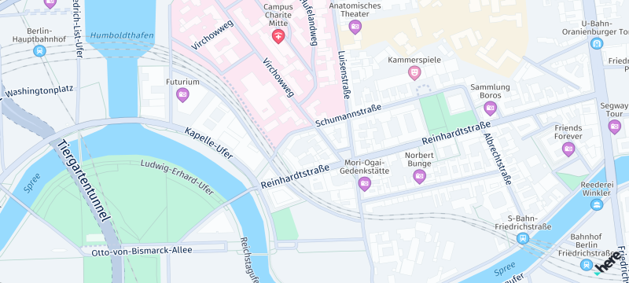

Get started with Maps
The HERE SDK offers robust mapping capabilities, allowing developers to seamlessly integrate map views into their applications. Key features include adding and customizing map views, adjusting the displayed location, and modifying map properties. At the heart of the mapping API is the HereMap, a subclass of StatefulWidget, which provides vector-based and raster-based representations of maps with various configurable properties.
HERE map data is updated on a weekly basis to ensure you always get the freshest map data available. By integrating the map view you can automatically benefit from this.
Show a map
Below you can see how to show a HERE map view. Remove all the code from your main.dart file and replace it with the following:
import 'package:flutter/material.dart';
import 'package:here_sdk/core.dart';
import 'package:here_sdk/core.engine.dart';
import 'package:here_sdk/core.errors.dart';
import 'package:here_sdk/mapview.dart';
void main() async {
// Usually, you need to initialize the HERE SDK only once during the lifetime of an application.
_initializeHERESDK();
runApp(MyApp());
}
void _initializeHERESDK() async {
// Needs to be called before accessing SDKOptions to load necessary libraries.
SdkContext.init(IsolateOrigin.main);
// Set your credentials for the HERE SDK.
String accessKeyId = "YOUR_ACCESS_KEY_ID";
String accessKeySecret = "YOUR_ACCESS_KEY_SECRET";
AuthenticationMode authenticationMode = AuthenticationMode.withKeySecret(accessKeyId, accessKeySecret);
SDKOptions sdkOptions = SDKOptions.withAuthenticationMode(authenticationMode);
try {
await SDKNativeEngine.makeSharedInstance(sdkOptions);
} on InstantiationException {
throw Exception("Failed to initialize the HERE SDK.");
}
}
class MyApp extends StatelessWidget {
Widget build(BuildContext context) {
return MaterialApp(
title: 'HERE SDK for Flutter - Hello Map!',
home: HereMap(onMapCreated: _onMapCreated),
);
}
void _onMapCreated(HereMapController hereMapController) {
hereMapController.mapScene.loadSceneForMapScheme(MapScheme.normalDay, (MapError? error) {
if (error != null) {
print('Map scene not loaded. MapError: ${error.toString()}');
return;
}
const double distanceToEarthInMeters = 8000;
MapMeasure mapMeasureZoom = MapMeasure(MapMeasureKind.distance, distanceToEarthInMeters);
hereMapController.camera.lookAtPointWithMeasure(GeoCoordinates(52.530932, 13.384915), mapMeasureZoom);
});
}
}
Note that the above shows only an isolated code snippet: to learn how to build a simple map application, including the integration and initialization of the HERE SDK, see our Get started section.

Pick embedded POIs
By default, the map displays several icons for restaurants, public transit, and other places of interest. These points of interest (POIs), known as Carto POIs, can be selected by the user to obtain more details. You also have the option to control the visibility of these embedded POIs.
Embedded POIs are preconfigured Carto POI markers that are displayed on the MapView by default. Unlike MapMarker items, their content and visual appearance cannot be modified without using the HERE Style Editor. However, users can tap on these icons to retrieve information such as location, PlaceCategory, and the name of the POI.
Embedded POIs can be picked in parallel to other MapMarker items shown on the map, unless they are currently hidden by another map item.
void _setTapGestureHandler() {
_hereMapController!.gestures.tapListener = TapListener((Point2D touchPoint) {
_pickMapContent(touchPoint);
});
}
void _pickMapContent(Point2D touchPoint) {
Point2D originInPixels = Point2D(touchPoint.x, touchPoint.y);
Size2D sizeInPixels = Size2D(50, 50);
Rectangle2D rectangle = Rectangle2D(originInPixels, sizeInPixels);
// Creates a list of map content type from which the results will be picked.
// The content type values can be mapContent, mapItems and customLayerData.
List<MapSceneMapPickFilterContentType> contentTypesToPickFrom = [];
// mapContent is used when picking embedded Carto POIs, traffic incidents, vehicle restriction etc.
// mapItems is used when picking map items such as MapMarker, MapPolyline, MapPolygon etc.
// Currently we need map content so adding the mapContent filter.
contentTypesToPickFrom.add(MapSceneMapPickFilterContentType.mapContent);
MapSceneMapPickFilter filter =
MapSceneMapPickFilter(contentTypesToPickFrom);
_hereMapController?.pick(filter, rectangle, (pickMapResult) {
if (pickMapResult == null) {
// Pick operation failed.
return;
}
PickMapContentResult? pickMapContentResult = pickMapResult.mapContent;
if (pickMapContentResult == null) {
// Pick operation failed.
return;
}
_handlePickedCartoPOIs(pickMapContentResult.pickedPlaces);
// ... pick more map content types.
});
}
void _handlePickedCartoPOIs(List<PickedPlace> cartoPOIList) {
int listSize = cartoPOIList.length;
if (listSize == 0) {
return;
}
PickedPlace topmostPickedPlace = cartoPOIList.first;
var name = topmostPickedPlace.name;
var lat = topmostPickedPlace.coordinates.latitude;
var lon = topmostPickedPlace.coordinates.longitude;
_showDialog("Carto POI picked", "Name: $name. Location: $lat, $lon. See log for more place details.");
// Now you can use the SearchEngine or the OfflineSearchEngine (if available for your edition)
// to retrieve the Place object containing more details.
}
Optionally, you can now use the SearchEngine or the OfflineSearchEngine (not available for all editions) to retrieve the Place object containing more details: use the PickMapContentResult to get a PickedPlace object that can be used to search for the Place.
Control the visibility of embedded POIs
The visibility of embedded POIs on the map can be controlled with MapContentSettings.setPoiCategoriesVisibility(...) that allows to set a VisibilityState for a list of POI categories.
Note that not all POI categories are available for all map schemes.
A list of supported categories can be found in the documentation of the HERE Style Editor.
On top, the Explore Edition does not support all PlaceCategory fields to be shown as embedded POI. For example, eatAndDrink and shopping are only visible when using the Navigate Edition.
Note that the following embedded POI category groups currently do not appear on the MapView of the Explore Edition:
- Accommodation
- Automotive
- Eat & Drink
- Shopping
Set a map language
You can customize the language that is used on the map to show labels for streets, cities and other map data. By default, the local language of a region is used.
Use the HereMapController to set a languageCode as primaryLanguage. This sets the language for the world - or set null to switch back to the default behavior. If a language is not supported in any region of the world, the local language for that region is shown instead:
HereMapController.primaryLanguage = LanguageCode.hiIn;
Use secondaryLanguage to set a secondary map language to support places that can show dual labels. If the text for primary and secondary language is the same, then only the primary language will be shown. If a requested language is not supported, then the local language is used. For example, some cities in India show a dual label with Latin (English) & Hindi text - at the same time.
Handle disputed territories
The HERE SDK supports multiple geographic political views and disputed borders to show the map boundaries based on an international view (default) or a local country view. The local view affects only particular areas on the map when a border and possession or control is claimed by two or more political entities - usually a country.
You can change the default geopolitical view by setting a three letter language code for the politicalView member accessible via SDKOptions. The supported country codes are accessible on the coverage page.
When set, the map view will show all country boundaries according to the geopolitical view of the country that has been set and the MapView will show the borders accordingly.
Note that this is released as a beta feature.
If you want to change the geopolitical view at runtime, use the following code snippet:
// Optionally, clear the cache, so that changing the options has an immediate effect.
SDKCache.fromSdkEngine(SDKNativeEngine.sharedInstance).clearAppCache((error) {
if (error != null) {
// ...
}
});
var options = SDKNativeEngine.sharedInstance.options;
options.politicalView = "ARG";
await SDKNativeEngine.sharedInstance?.dispose();
// Now initialize the HERE SDK again using the new options.
Make sure to call this not during any ongoing HERE SDK operation, as setting new options requires also to create a new shared instance. Ideally, set the options and the politicalView only once before initializing the HERE SDK for the first time during the app's lifecycle.
Manage the HERE watermark
When using the HERE SDK, it is required that the HERE logo is always visible on the map view. By default, the HERE logo is located at the bottom right corner of the map. However, you can easily customize its location to meet your app design by calling setWatermarkLocation() on your map view controller. It is recommended to change the default placement, only when it is required due to overlapping UI elements. Note for very small views: if both edges of the map are less than 250 density independent pixels in size, the watermark will be hidden automatically.
Note
Only upon special agreement with HERE it is possible to remove the HERE logo.